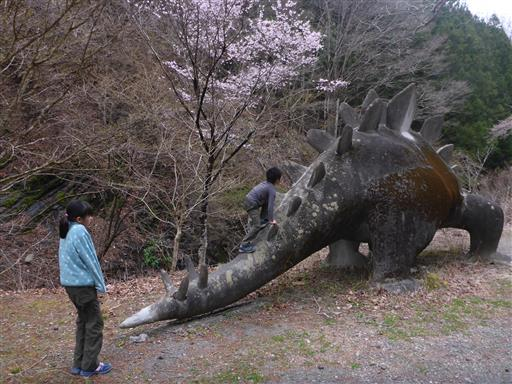
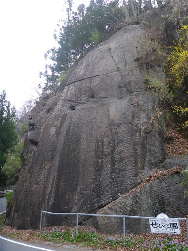
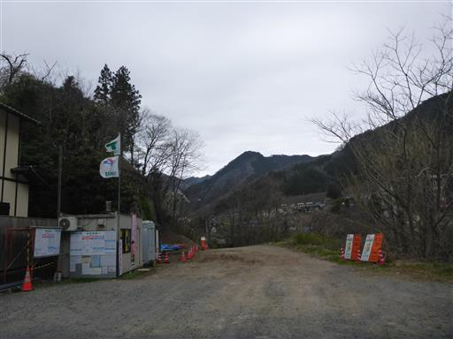
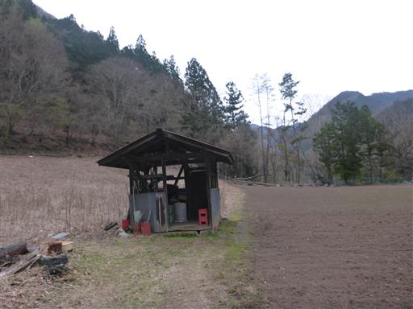
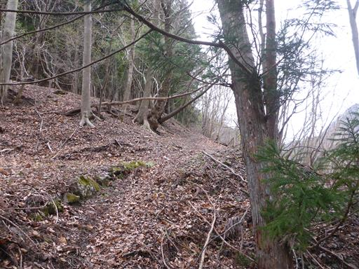
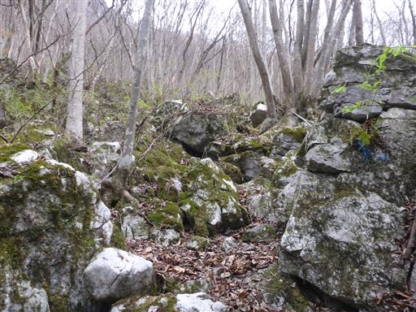
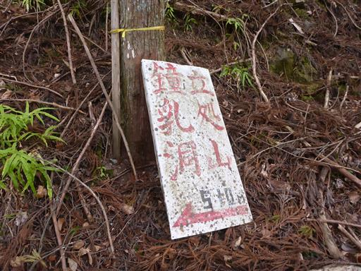

立処山 撤退
| 日付 | 2020年4月5日（日） |
|---|---|
| 山域 | 西上州 |
| メンバー | 家族（妻、長女・9歳、長男・6歳） |
| 山行形態 | 子連れ日帰り |
| アクセス | 車 |
コロナウイルスが猛威を振るっている。
感染リスクを避けるため、人と会わなさそうな
西上州の一峰に行ってみることにする。
登山口の手前に公園があり、トイレを利用するため立ち寄る。
残念ながらトイレは無かったが、大きな恐竜の石像があり、少しここで遊ぶ。

その少し先の駐車場にトイレがあったため、ここで利用させてもらう。

ここからは恐竜の足跡の化石を見学できる。
穴が開いているものが足跡らしいが、「ふーん」以外の感想が出てこない。
1億年前に恐竜が歩いた足跡が残っていて、それが隆起して今見学できるというのは
すごいことではあるのだが…

登山道入口の空き地に車を停める。

畑の中の畦道のような細い道を歩いていく。

そのまま道は登山道に突入。

周囲は岩がちな地形だ。ここには鍾乳洞があるので石灰岩なのだろう。

鍾乳洞の標識の矢印は来た方向を指しているため、通り過ぎてしまったようだ。
鍾乳洞を探そうとしたところで、娘と息子が歩く順番を巡って喧嘩を始める。
息子が岩で頭を強打して血が出ているため、大事をとって引き上げることにする。
